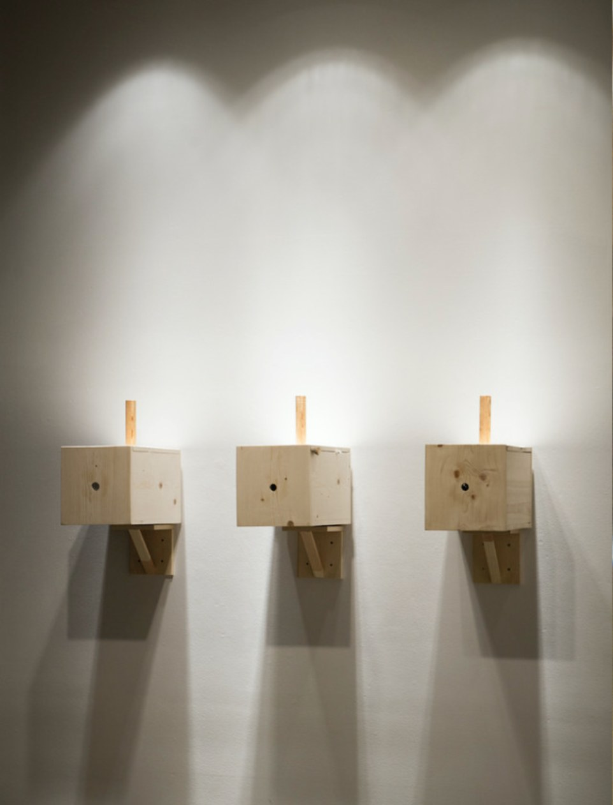
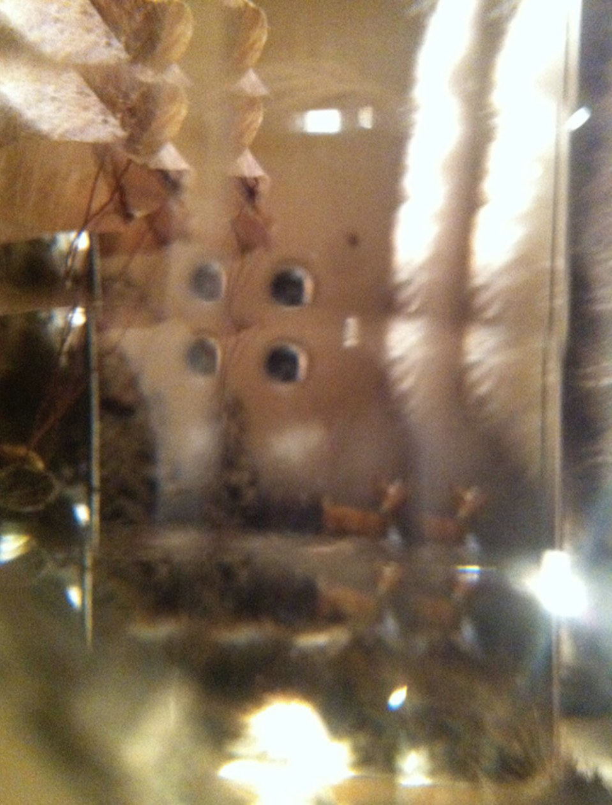
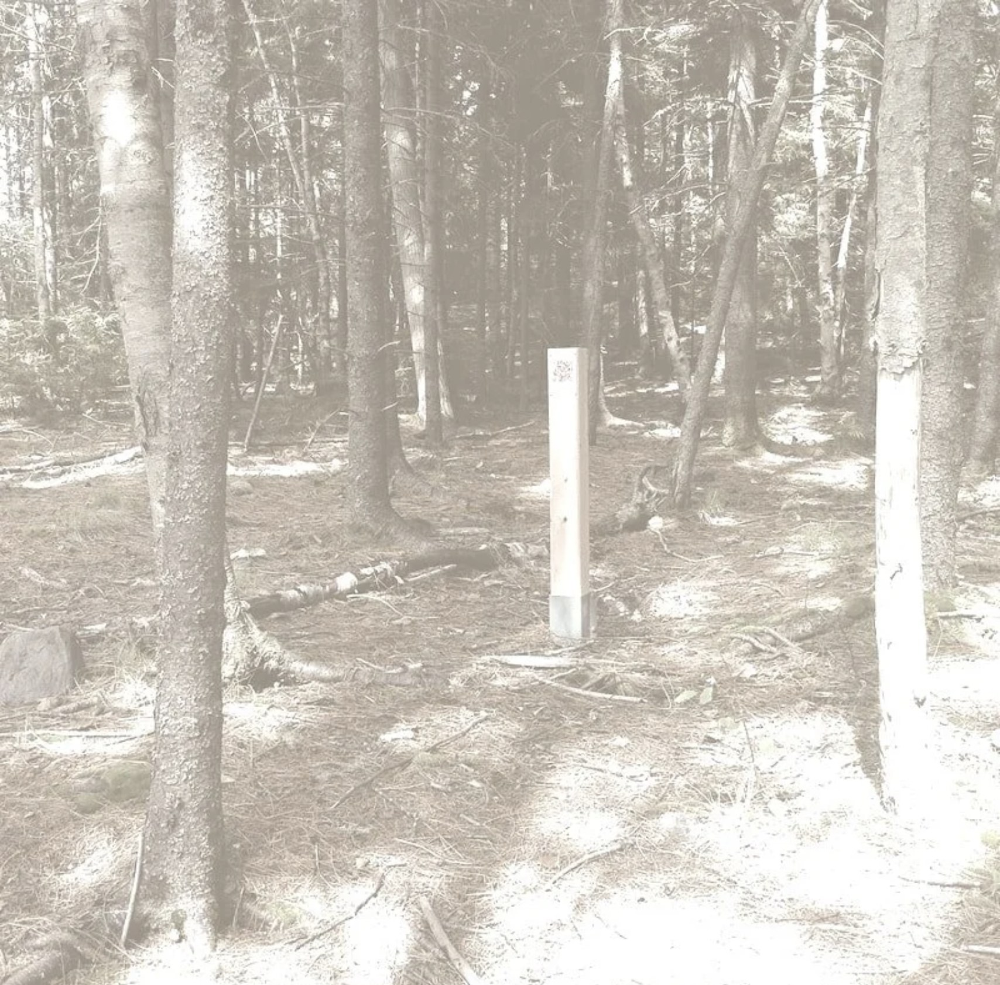
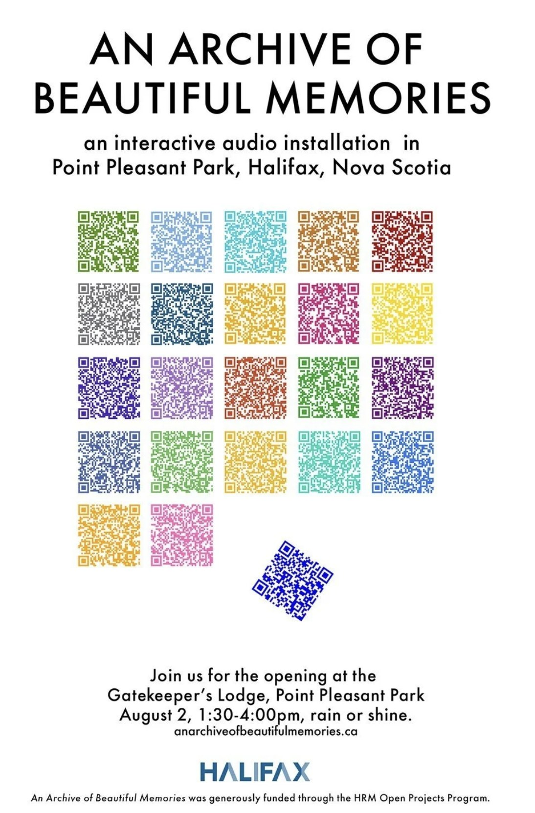

Scroll sideways, or select an image to open it at full size.
Testimony of Echo, 2010: Transcriptions, a series of photolithographs of drawings; Specimens: jars containing hand-written & typed text on gampi held in place with ballasts and sealed with paraffin, and Emergence, a wooden cupboard designed to hold lab slides of microscopic digital prints
Exhibitions
Testimony of Echo, Eleanor Winters Art Gallery, York University, Toronto, ON, Apr. 7–21, 2010
Testimony of Echo, Anna Leonowens Gallery, NSCAD University, Halifax, NS, Jan. 11–23, 2010
The Optics of Animal Love
2013


The Optics of Animal Love, hand-cranked wooden boxes with peep hole and interactive faceted mirror technology, 2013
Exhibitions
Fur Stories [ you are not wild enough for me ], FAB Gallery, University of Alberta, Edmonton, AB, Dec. 10, 2013 – Jan. 12, 2014
An Archive of Beautiful Memories
2014–2016


An Archive of Beautiful Memories, interactive audio installation, Point Pleasant Park, Halifax, NS, August 2014–2016. Funded by the HRM Open Projects Program
The project began with memoirs written by my students in Introduction to Visual Culture at NSCAD University in 2011. Following a series of lectures on Elaine Scarry’s On Beauty and Being Just (1998), I invited students to write a memoir based on a memory of something beautiful. The installation placed twenty-two recorded memoirs throughout the park, accessible through QR codes. In response, designer Rebecca Hannon created a series of porcelain forms, exhibited in the park for the duration of the installation.
Scroll sideways, or select an image to open it at full size.
From left: video clip from performance of for D: becoming a tree, jumpsuit, trampoline, and a gilded mirror, Kingston, ON, Aug. 11, 2024From the installation for D: becoming a tree, the jumpsuit, a quilted jumpsuit with digitally printed silk organza, mutton lamb wool, cotton batting, and embroidered with rhinestones & beads, 2022The Reproductions: Disappearance, machine-stitched reproduction of a 19thC lithograph of ballerina Fanny Elssler jumping in the air, 2022The Reproductions: Disappearance and Daphne & Apollo, machine-stitched reproductions of the lithograph and of an etching of Apollo and Daphne from the workshop of Hendrick Goltzius (1589), 2022NECESSITY AND FUTILITY, Dear D----, from for D: becoming a tree, machine & hand stitched embroidered email with appliqué, 2022From for D: becoming a tree: embroidered tulle sleeves, budding branches with pink duct tape, and coveralls with an embroidered patch, 2022tree song, 2023. Machine-stitched lace, 14” x 28”From a search of the HathiTrust website for the phrase “becoming a tree,” 2022. The typefaces of the sources were carried into the stitch file
tree song is part of for D: becoming a tree, a larger body of work I developed from the myth of Apollo and Daphne. In Ovid's telling, Daphne becomes a laurel tree to escape Apollo's pursuit. In 2022 I searched the full-text collection of the HathiTrust Digital Library for the phrase “becoming a tree” and selected twelve passages from the results. I digitally stitched these fragments into a single textile, and the work became part of my material exploration of lace-like structures made through machine stitching.
Eleven of the twelve passages come from works written by men or published without attribution under male editors. The one woman in the search did not publish under her own name. The preface to Esthwaite Water is signed “The Authoress.” In it, she explains that she appears before the public anonymously and that the book's profits will support charitable and educational work. Her passage extends the parable of the mustard seed to her own small book, which she hopes will grow into a tree. She is the only writer among the twelve who applies the phrase to herself.
Exhibitions
for D: becoming a tree (solo), Gallery 505, Calgary, AB, Nov. 1, 2023 – Apr. 5, 2024
RISD Grad Show 2023, Providence Convention Center, Providence, RI, May 25 – June 3, 2023